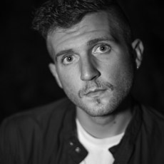
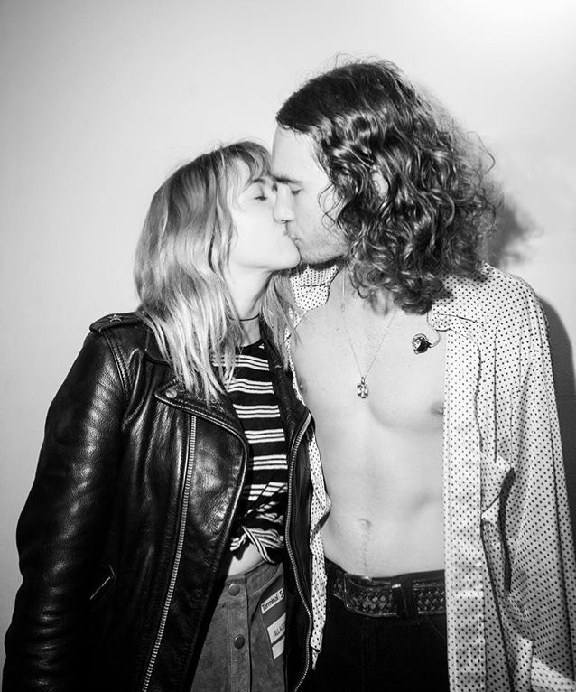
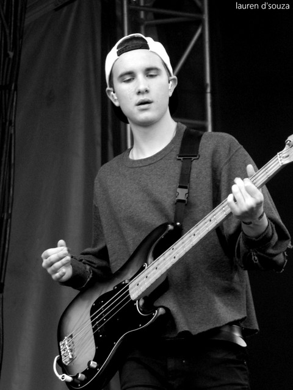

Bryan Sammis
I K I L I K I L I K I L I K I L I

Bryan Sammis, que as vezes usa um pseudônimo de “Olivver”, é um talentoso músico indie e compositor de sucesso, que nasceu dia 11 de julho de 1990, em Oak Park, Califórnia. E era um membro original da banda de rock The Neighbourhood.
O americano foi o primeiro baterista da banda, reunindo-se com seus ex-companheiros de banda em agosto de 2011. Mas deixou o grupo em janeiro de 2014, sendo substituído por Brandon Fried e em 2018 tornou-se vocalista da banda La Bouquet.
Galeria
Rede Sociais
Não encontrado.
Zach Abels
I K I L I K I L I K I L I K I L I
Zachary Shane Abels é um artista americano que integrou a banda The Neighbouhood, como um dos dois guitarristas da banda. Ele nasceu dia 3 de julho de 1992, em Simi Valley, Califórnia.
Zach foi um guitarrista da banda de rock The Neighbourhood, e sua música favorita para tocar ao vivo era o mashup 'Daddy Issues' / 'Void'.
Galeria

Rede Sociais
Jesse Rutherford
I K I L I K I L I K I L I K I L I
Jesse James Rutherford, também conhecido mononimamente como Jesse, nasceu em 21 de agosto de 1991, em Parque Newbury, Califórnia. Jesse é um cantor e ator americano, que integrou como vocalista na banda de rock The Neighbourhood.
Carreira
Em 2002, Jesse conseguiu um papel no filme "Life or Something Like it", depois de atuar em comerciais quando criança. Também estrelou o filme "Ted Bundy" e o episódio "'Marauders' of Star Trek: Enterprise".
A partir de 2011, lançou uma mixtape solo intitulada "Truth Hurts". No mesmo ano, juntou-se com seus ex-companheiros da banda The Neighbourhood, e formaram a mesma, começando assim sua carreira na banda. Mas posteriormente decide seguir carreira solo, assim deixando a banda e desestabilizando-a.
Em dezembro de 2014, Jesse foi preso 2014 no Aeroporto Internacional Newark Liberty, em Nova Jersey, por posse de drogas, quando foi flagrado por agentes da TSA enquanto tentava jogar fora um pequeno saco de maconha. Mais tarde, no mesmo ano, ele descobriu que sofria de uma forma rara de daltonismo chamada acromatopsia, que é o daltonismo total. É por isso que a maior parte do conteúdo do The Neighbourhood é monocromático ou em preto e branco.
Assim em fevereiro de 2016, Jesse começou a lançar músicas solo em uma conta do Soundcloud intitulada "The Factory". Ele também lançou seu primeiro livro, "&", no início de 2016. Onde o livro está repleto de fotos suas tiradas pela fotógrafa Jessie English.
Em 26 de outubro de 2017, Rutherford lançou um single intitulado "Born to Be Blonde", sugerindo uma estreia solo. Em 3 de novembro, ele lançou outro single intitulado "Drama" e confirmou o nome, arte e data de lançamento do álbum. No dia 9 de novembro, ele lançou o restante das faixas do álbum no YouTube. O álbum, intitulado "&", foi lançado oficialmente no dia seguinte.
Agosto de 2018, Jesse postou trechos de novas músicas em seus storys no Instagram. Em 19 de outubro, ele twittou que esteve em estúdio com Lana Del Rey, confirmando uma próxima colaboração. E em 17 de dezembro, Jesse anunciou que faria sua primeira turnê solo em 2019.
Relacionamentos
Por vários anos, Jesse manteve um relacionamento intermitente com a cantora americana Anabel Englund antes de finalmente encerrar o relacionamento para sempre em 2014. Em 25 de abril de 2015, Jesse começou a namorar a cofundadoa da Wildflower Cases, Devon Carlson. Eles se separaram em novembro de 2021, após 7 anos de namoro. Em 2022, Jesse começou a namorar a cantora americana Billie Eilish, mas terminaram em maio de 2023.
Galeria
Rede Sociais
Mikey Margott
I K I L I K I L I K I L I K I L I
Michael Blake Margott, é um artista americano, que foi membro da banda The Neighbourhood, atuando como baxista. Mikey nasceu no dia 1 de outubro de 1993 na Califórnia.
Mikey foi o baxista da banda de rock The Neighbourhood, reunindo-se com seus colegas em 2011. Sua música favorita para tocar ao vivo é 'You Get Me So High'.
Relacionamentos
No seu Instagram, Mikey costuma tirar fotos com sua namorada Lauren Leekley.
Galeria

Rede Sociais
Jeremy Freedman
I K I L I K I L I K I L I K I L I
Jeremiah Allen Freedman, é um artista americano que foi membro da banda The Neighbourhood, juntando-se com seus colegas em 2011. Jeremy nasceu no dia 2 de julho de 1992 em Simi Valley na Califórnia.
O americano foi um dos membros da banda de rock-indie The Neighbourhood, sendo um dos dois guitarristas da banda, além de vocalista de fundo. Tinha a música 'Stuck with Me' como a sua favorita para tocar ao vivo.
Galeria

Rede Sociais
Brandon Fried
I K I L I K I L I K I L I K I L I

Brandon Alexander Fried nasceu na Califórnia, em 6 de novembro de 1990. Sendo um artista americano que foi membro da banda The Neighbourhood.
Brandon foi o segundo baterista da banda rock-indie The Neighbourhood, se juntando a banda em 2014, substituindo o ex-baterista Bryan Sammis. E tinha como música favorita para tocar ao vivo a 'Warm'.
Porém em novembro de 2022, Brandon foi demitido da banda após alegações de agressão sexual contra ele se tornarem públicas.
Galeria

Rede Sociais
Não encontrado.